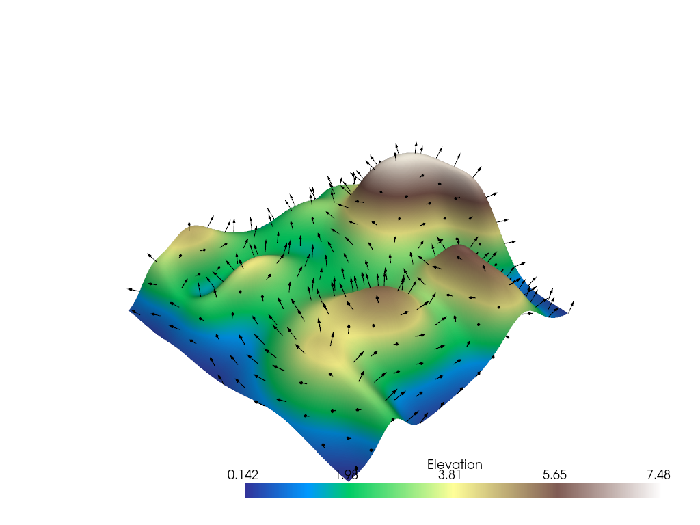
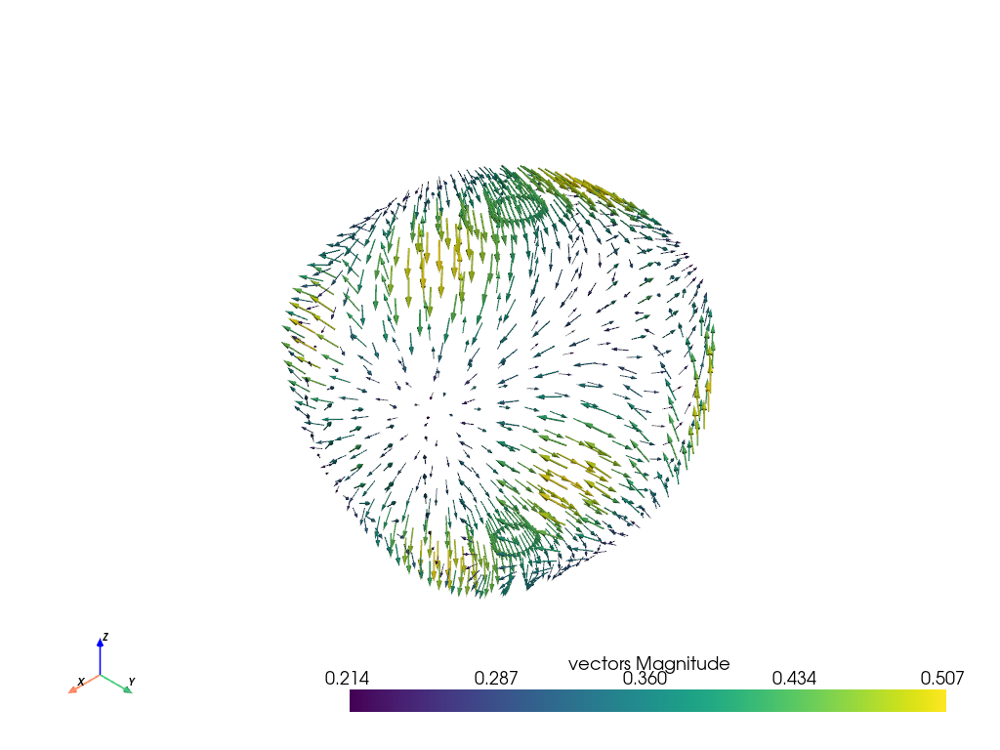
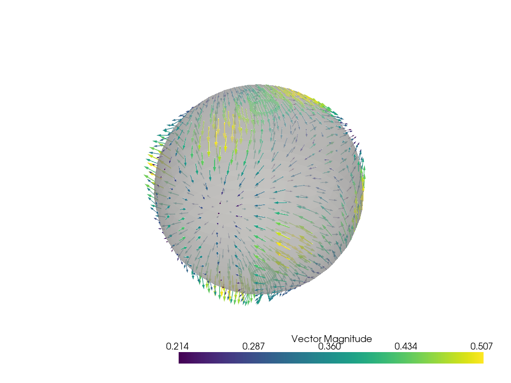

注釈
完全なサンプルコードをダウンロードしたり、Binderを使ってブラウザでこのサンプルを実行するには、 最後に進んでください 。
グリフ（矢印）によるベクトルの表示#
データセット内のベクトルを使用して，記号/ジオメトリオブジェクトを印刷したり方向を設定します．
import numpy as np
import pyvista as pv
from pyvista import examples
法線のあるデータセット例
mesh = examples.load_random_hills()
グリフィイングは pyvista.DataSetFilters.glyph() フィルターを介して行うことができる
help(mesh.glyph)
Help on method glyph in module pyvista.core.filters.data_set:
glyph(orient: 'bool | str' = True, scale: 'bool | str' = True, factor: 'float' = 1.0, geom: '_vtk.vtkDataSet | DataSet | Sequence[_vtk.vtkDataSet | DataSet] | None' = None, indices: 'VectorLike[int] | None' = None, tolerance: 'float | None' = None, absolute: 'bool' = False, clamping: 'bool' = False, rng: 'VectorLike[float] | None' = None, color_mode: "Literal['scale', 'scalar', 'vector']" = 'scale', progress_bar: 'bool' = False) method of pyvista.core.pointset.PolyData instance
Copy a geometric representation (called a glyph) to the input dataset.
The glyph may be oriented along the input vectors, and it may
be scaled according to scalar data or vector
magnitude. Passing a table of glyphs to choose from based on
scalars or vector magnitudes is also supported. The arrays
used for ``orient`` and ``scale`` must be either both point data
or both cell data.
Parameters
----------
orient : bool | str, default: True
If ``True``, use the active vectors array to orient the glyphs.
If string, the vector array to use to orient the glyphs.
If ``False``, the glyphs will not be orientated.
scale : bool | str | sequence[float], default: True
If ``True``, use the active scalars to scale the glyphs.
If string, the scalar array to use to scale the glyphs.
If ``False``, the glyphs will not be scaled.
factor : float, default: 1.0
Scale factor applied to scaling array.
geom : vtk.vtkDataSet or tuple(vtk.vtkDataSet), optional
The geometry to use for the glyph. If missing, an arrow glyph
is used. If a sequence, the datasets inside define a table of
geometries to choose from based on scalars or vectors. In this
case a sequence of numbers of the same length must be passed as
``indices``. The values of the range (see ``rng``) affect lookup
in the table.
.. note::
The reference direction is relative to ``(1, 0, 0)`` on the
provided geometry. That is, the provided geometry will be rotated
from ``(1, 0, 0)`` to the direction of the ``orient`` vector at
each point.
indices : sequence[float], optional
Specifies the index of each glyph in the table for lookup in case
``geom`` is a sequence. If given, must be the same length as
``geom``. If missing, a default value of ``range(len(geom))`` is
used. Indices are interpreted in terms of the scalar range
(see ``rng``). Ignored if ``geom`` has length 1.
tolerance : float, optional
Specify tolerance in terms of fraction of bounding box length.
Float value is between 0 and 1. Default is None. If ``absolute``
is ``True`` then the tolerance can be an absolute distance.
If ``None``, points merging as a preprocessing step is disabled.
absolute : bool, default: False
Control if ``tolerance`` is an absolute distance or a fraction.
clamping : bool, default: False
Turn on/off clamping of "scalar" values to range.
rng : sequence[float], optional
Set the range of values to be considered by the filter
when scalars values are provided.
color_mode : str, optional, default: ``'scale'``
If ``'scale'`` , color the glyphs by scale.
If ``'scalar'`` , color the glyphs by scalar.
If ``'vector'`` , color the glyphs by vector.
.. versionadded:: 0.44
progress_bar : bool, default: False
Display a progress bar to indicate progress.
Returns
-------
pyvista.PolyData
Glyphs at either the cell centers or points.
Examples
--------
Create arrow glyphs oriented by vectors and scaled by scalars.
Factor parameter is used to reduce the size of the arrows.
>>> import pyvista as pv
>>> from pyvista import examples
>>> mesh = examples.load_random_hills()
>>> arrows = mesh.glyph(scale='Normals', orient='Normals', tolerance=0.05)
>>> pl = pv.Plotter()
>>> actor = pl.add_mesh(arrows, color='black')
>>> actor = pl.add_mesh(
... mesh,
... scalars='Elevation',
... cmap='terrain',
... show_scalar_bar=False,
... )
>>> pl.show()
See :ref:`glyph_example` and :ref:`glyph_table_example` for more
examples using this filter.
入力データセットのすべてのノードにグリフが必要ない場合があります．この場合，マージ許容値を使用して，入力データセットのサブセットのグリフを作成することを選択できます．ここでは，5パーセントのマージ許容値を指定します．これは，バウンディングボックスの長さの5パーセントに相当します．
グリフフィルタを使用して矢印のサブセットを作成する
arrows = mesh.glyph(scale="Normals", orient="Normals", tolerance=0.05)
p = pv.Plotter()
p.add_mesh(arrows, color="black")
p.add_mesh(mesh, scalars="Elevation", cmap="terrain", smooth_shading=True)
p.show()

一般的な方法は，メッシュオブジェクトに直接ベクトルをロードして，グリフを生成するために pyvista.DataSet.arrows プロパティにアクセスする方法です．
sphere = pv.Sphere(radius=3.14)
# make cool swirly pattern
vectors = np.vstack(
(
np.sin(sphere.points[:, 0]),
np.cos(sphere.points[:, 1]),
np.cos(sphere.points[:, 2]),
)
).T
vectors
array([[ 0. , 1. , -0.99999875],
[ 0. , 1. , -0.99999875],
[ 0.33300975, 1. , -0.9998 ],
...,
[ 0.83088565, 0.97835207, -0.98625994],
[ 0.61331964, 0.9901682 , -0.9971885 ],
[ 0.32600534, 0.99750996, -0.9998 ]],
shape=(842, 3), dtype=float32)
# add and scale
sphere["vectors"] = vectors * 0.3
sphere.set_active_vectors("vectors")
# plot just the arrows
sphere.arrows.plot()

矢印と球体をプロットします．
p = pv.Plotter()
p.add_mesh(sphere.arrows, lighting=False, scalar_bar_args={"title": "Vector Magnitude"})
p.add_mesh(sphere, color="grey", ambient=0.6, opacity=0.5, show_edges=False)
p.show()

Total running time of the script: (0 minutes 1.314 seconds)